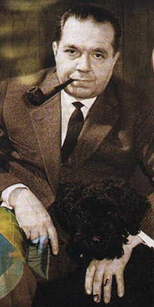
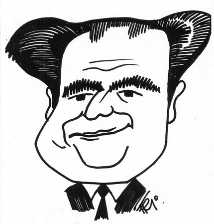
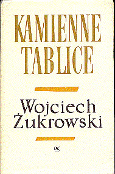
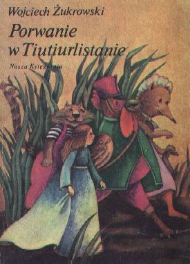
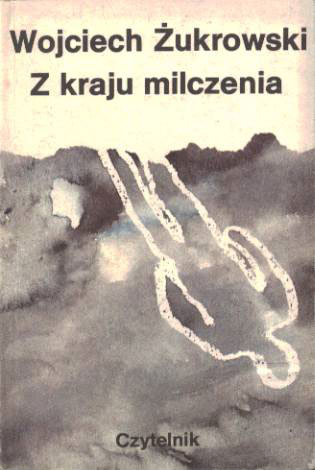

ZACHOWANE ŚLADY
Archiwum
Portrety pisarza i okładki jego książek. Materiały, dzięki którym można przyjrzeć się twórczości także od strony obrazu.





33 OKŁADKI Z ARCHIWUM
Książka ma wiele twarzy.
Różne wydania, ilustracje i projekty graficzne. Zobacz kolekcję zachowanych okładek.
Przejrzyj okładki →